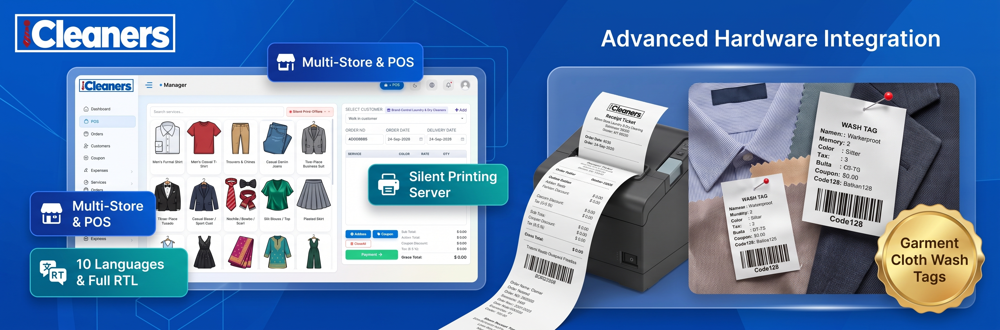
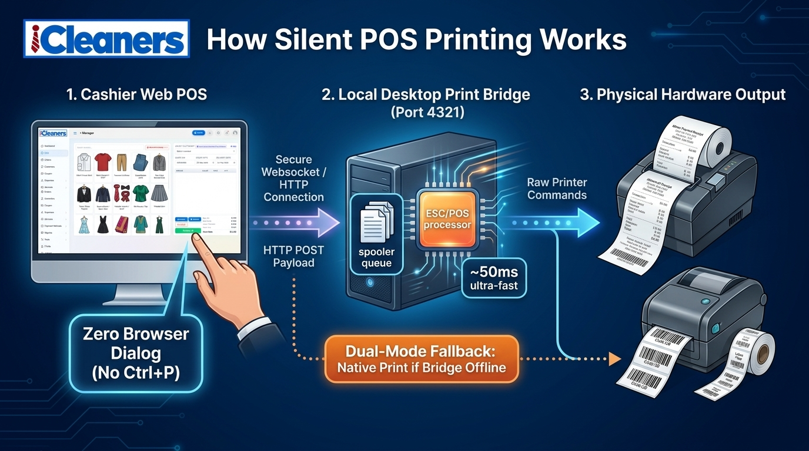

iCleaners Documentation
Commercial Release v1.0.0Multi-Store Laundry & Dry Cleaning Management System with Silent Thermal POS & Wash Tag Printing
Official Slogan & Tagline
"Scale Your Laundry Business from a Single Shop to a Multi-Store Franchise with Zero-Click Silent Hardware Printing."
iCleaners is a complete end-to-end Enterprise Resource Planning (ERP) and Point of Sale (POS) system engineered specifically for single-store laundromats, boutique dry cleaners, alteration workshops, and multi-branch commercial franchises. Built with Node.js, Express, and MySQL, it delivers high-performance web order management paired with a standalone Silent Hardware Printing Server for zero-delay receipts and garment tag generation.
Silent POS Hardware
Direct ESC/POS spooling on port 4321 with zero browser print dialogs, 80mm/58mm tickets, and 75mm/50mm garment cloth tags.
Multi-Store Franchises
Isolated store accounts, branch manager credentials, custom commission percentage payouts, and central master administrative oversight.
10 Languages + RTL
Pre-translated in 10 languages (EN, IN, PT, ES, FR, CN, AE, ID, PH, UK) with native Right-to-Left (RTL) layout switching for Arabic.
System Requirements
Prerequisites for server hosting, cashier workstations, and hardware peripherals.
| Component | Minimum Specification | Recommended (Production) |
|---|---|---|
| Operating System | Ubuntu 20.04 / Windows 10 / Windows Server | Ubuntu 22.04 LTS or Windows Server 2019/2022 |
| Node.js Runtime | v16.14.0 LTS | v18.x or v20.x LTS |
| Database | MySQL 5.7+ / MariaDB 10.3+ | MySQL 8.0+ / MariaDB 10.6+ |
| Memory (RAM) | 1 GB RAM | 2 GB to 4 GB RAM |
| Storage Space | 500 MB free disk space | 10 GB+ SSD (for store logos, service photos & backups) |
| Thermal Receipt Printer | Any 58mm ESC/POS USB printer | 80mm Thermal Receipt Printer (USB / Ethernet) |
| Garment Tag Printer | Standard thermal / ink printer | 75mm × 50mm Continuous Nylon Roll Tag Printer |
Default Demo Credentials
Pre-configured administrative, store manager, and cashier accounts.
admin
123456
Full global master access: store creation, system settings, payouts, all reports.
manager
123456
Branch store oversight: store-scoped POS, store orders, branch staff, local cash drawer.
cashier
123456
Cashier POS booking, thermal receipt & garment cloth tag printing, order status updates.
How to Run & Build the Project
Local development, compilation commands, and running the application daemon.
Step 1: Install Dependencies
Open your command line in the project root directory and execute:
npm installStep 2: Running in Development Mode (with Live Reload)
# Starts nodemon watching server files and dev-reload
npm startThe console will output:
✅ [Database] Successfully connected to MySQL at 127.0.0.1:3306/icleaners
server running on port http://localhost:5000/Step 3: Running with PM2 (Production Process Manager)
# Install PM2 globally
npm install -g pm2
# Start the application
pm2 start app.js --name "icleaners"
# Configure automatic startup on system reboot
pm2 startup
pm2 saveDatabase & Environment Configuration
Configuring config.env and importing the SQL schema.
The config.env File
Locate or create config.env in the application root
directory:
PORT=5000
DATABASE=icleaners_db
USER_NAME=root
PASS_WORD=your_database_password
HOST_NAME=127.0.0.1
PORT_NAME=3306
TOKEN_KEY=any_secure_random_hash_string_for_jwt
TOKEN=another_secure_hash_for_language_cookiesImporting Database Schema
Import the included SQL schema file located at
database/lndry.sql:
# 1. Create the database
mysql -u root -p -e "CREATE DATABASE icleaners_db CHARACTER SET utf8mb4 COLLATE utf8mb4_unicode_ci;"
# 2. Import the schema and seed data
mysql -u root -p icleaners_db < database/lndry.sqlDeploying on Linux (Ubuntu 20.04 / 22.04 LTS)
Complete production setup with Nginx reverse proxy, PM2, and Let's Encrypt SSL.
127.0.0.1:5000.
Step 1: Install Node.js, MySQL, and Nginx
# Update repositories
sudo apt update && sudo apt upgrade -y
# Install Node.js 18.x LTS via NodeSource
curl -fsSL https://deb.nodesource.com/setup_18.x | sudo -E bash -
sudo apt install -y nodejs nginx mysql-server git
# Verify installations
node -v && npm -v && mysql --versionStep 2: Upload Files & Install Dependencies
# Clone or move files to /var/www/icleaners
sudo mkdir -p /var/www/icleaners
sudo chown -R $USER:$USER /var/www/icleaners
cd /var/www/icleaners
# Install project packages
npm install --production
# Create config.env with your database credentials
nano config.envStep 3: Setup Nginx Reverse Proxy
Create a new Nginx virtual host configuration:
sudo nano /etc/nginx/sites-available/icleaners.conf
server {
listen 80;
server_name yourdomain.com www.yourdomain.com;
client_max_body_size 50M;
location / {
proxy_pass http://127.0.0.1:5000;
proxy_http_version 1.1;
proxy_set_header Upgrade $http_upgrade;
proxy_set_header Connection 'upgrade';
proxy_set_header Host $host;
proxy_cache_bypass $http_upgrade;
proxy_set_header X-Real-IP $remote_addr;
proxy_set_header X-Forwarded-For $proxy_add_x_forwarded_for;
proxy_set_header X-Forwarded-Proto $scheme;
}
}# Enable configuration and test syntax
sudo ln -s /etc/nginx/sites-available/icleaners.conf /etc/nginx/sites-enabled/
sudo nginx -t
sudo systemctl restart nginx
# Install free SSL certificate via Certbot
sudo apt install -y certbot python3-certbot-nginx
sudo certbot --nginx -d yourdomain.com -d www.yourdomain.comStep 4: Launch Application with PM2
sudo npm install -g pm2
cd /var/www/icleaners
pm2 start app.js --name "icleaners"
pm2 startup
pm2 saveDeploying on cPanel Shared / VPS Hosting
Using cPanel "Setup Node.js App" (Phusion Passenger) & MySQL Database Wizard.
Step 1: Create Database in cPanel
- Log in to your cPanel Dashboard.
- Open MySQL® Database Wizard.
-
Create a database name (e.g.,
cpaneluser_icleaners). - Create a database username and generate a strong password. Save these credentials.
- Under Privileges, select ALL PRIVILEGES and click Make Changes.
-
Open phpMyAdmin from cPanel, select your newly
created database, go to the Import tab, choose
database/lndry.sqlfrom the unzipped package, and click Go.
Step 2: Upload Application Files
- Open File Manager in cPanel.
-
Navigate to your root home folder (e.g.
/home/cpaneluser/). - Create a folder named
icleaners_app. -
Upload the application ZIP and extract all files inside
/home/cpaneluser/icleaners_app/. -
Edit
config.envwith your cPanel database credentials:PORT=5000 DATABASE=cpaneluser_icleaners USER_NAME=cpaneluser_dbuser PASS_WORD=your_database_password HOST_NAME=localhost PORT_NAME=3306 TOKEN_KEY=secret_jwt_token_key
Step 3: Setup Node.js App in cPanel
- In cPanel, click Setup Node.js App (under the Software section).
- Click the blue Create Application button.
-
Configure the form parameters:
-
Node.js version: Select
18.xor20.x. -
Application mode: Select
Production. -
Application root: Type
icleaners_app. -
Application URL: Select your domain or
subdomain (e.g.
laundry.yourdomain.com). -
Application startup file: Type
app.js.
-
Node.js version: Select
- Click Create.
- Once created, click Run NPM Install to automatically install all dependencies.
- Click Restart. Your application is now live on your domain!
Deploying on Windows Server (IIS)
Configuring Internet Information Services (IIS) with the included
web.config and NSSM service.
web.config configured for URL Rewrite
Reverse Proxying to port 5000 with 50MB file upload limits!
Step 1: Install Required Windows Modules
- Install Node.js for Windows (v18.x LTS or v20.x LTS) from nodejs.org.
- Install MySQL Server (or Laragon / MariaDB) on Windows.
- In Server Manager → Add Roles and Features → Enable Web Server (IIS).
- Download and install the official Microsoft IIS extensions:
- Open IIS Manager, click the top Server Node → open Application Request Routing → click Server Proxy Settings in the right panel → check Enable proxy → click Apply.
Step 2: Deploy Files & Verify web.config
Place the application folder in
C:\inetpub\wwwroot\icleaners. The included
web.config automatically handles reverse proxy routing:
<?xml version="1.0" encoding="utf-8"?>
<configuration>
<system.webServer>
<security>
<requestFiltering>
<requestLimits maxAllowedContentLength="52428800" />
</requestFiltering>
</security>
<rewrite>
<rules>
<rule name="ReverseProxyToNode" stopProcessing="true">
<match url="(.*)" />
<action type="Rewrite" url="http://127.0.0.1:5000/{R:1}" />
</rule>
</rules>
</rewrite>
<httpErrors existingResponse="PassThrough" />
</system.webServer>
</configuration>Step 3: Run Node.js as a Background Windows Service (NSSM)
To ensure Node.js restarts automatically upon server reboots without leaving a command window open:
# Download NSSM (Non-Sucking Service Manager) from nssm.cc
# In elevated CMD, install service:
nssm install iCleanersService "C:\Program Files\nodejs\node.exe" "app.js"
nssm set iCleanersService AppDirectory "C:\inetpub\wwwroot\icleaners"
nssm start iCleanersServiceSilent Printing Server & Dual-Mode Printing
Zero-dialog background hardware ticket printing over port 4321.

How Silent Printing Operates
- The cashier clicks "Complete Order & Print" inside the POS interface.
-
The browser JavaScript client checks if the local print bridge on
http://127.0.0.1:4321is alive. - If online, it dispatches an asynchronous HTTP POST payload containing raw ESC/POS commands or formatted thermal HTML.
- The local printing daemon directly feeds the OS spooler queue. The receipt prints in ~50ms without displaying the browser print dialog!
Automatic Browser Fallback Rule
If the cashier's computer does not have the desktop printing server
running or port 4321 is unreachable, iCleaners
instantly falls back to standard browser printing
(window.print()). Cashiers are never blocked!
Garment Cloth Wash Tag System
In laundry and dry cleaning operations, paper tags dissolve in
washers. iCleaners generates continuous roll
waterproof garment wash tags (75mm × 50mm) with
Code128 barcodes rendered via JsBarcode:
-
Unique Tag Sequence: Every garment piece receives
an individual tag (e.g.,
ORD-1001-01,ORD-1001-02). - Customer & Rack Info: Includes customer name, store telephone, garment service type, and assigned conveyor rack number.
- Wash Care Symbols: Automatically indicates dry clean only, delicate wash, or steam press instructions.
Screen-by-Screen User Manual
Comprehensive guide to every module, form, table, and operational workflow in iCleaners.
1. Authentication & Password Recovery
Route:/, /login,
/forgot-password,
/reset-password
The secure gateway to iCleaners, supporting encrypted login sessions and self-service password retrieval.
Key Elements & Functions:
- Language Switcher: Floating top-right dropdown allowing users to select any of the 10 languages (including Arabic RTL) prior to signing in.
- Theme Toggle: Instant light/dark mode switch preserved across browser refreshes.
- Username & Password: Authenticates against bcrypt password hashes and verifies role status (Master Admin, Manager, Cashier, or Customer).
- Remember Me: Stores an encrypted persistent session cookie.
- Forgot Password: Verifies username or registered email and dispatches a secure cryptographic reset link via SMTP.
2. Command Center Dashboard
Route:/index
The real-time operational cockpit providing high-level KPIs, store volume analytics, and quick-action POS shortcuts.
Key Elements & Functions:
- Command Center Header: Greets logged-in staff, displays active franchise/store scope, and includes quick-action POS and report buttons.
-
4 Primary KPI Metric Tiles:
- TOTAL SALES: Aggregate gross revenue with store currency symbol.
- TOTAL ORDERS: Lifetime order volume across all branches.
- SERVICES: Total active catalog services offered.
- CUSTOMERS: Total registered customer client base.
- Store Performance Breakdown Table: Lists all registered branch locations with individual store orders, gross turnover, active manager name, and direct POS access link.
- Analytical Charts: Interactive monthly order volume trend charts and sales revenue breakdown powered by Chart.js.
3. Interactive Point of Sale (POS)
Route:/admin/pos
The heartbeat of store operations, facilitating fast customer checkouts, service selection, and instant ticket printing.
Key Elements & Functions:
- Store Selector: Master admins can switch between branch stores; branch managers and cashiers are locked to their assigned store.
- Customer Selection & +Add Modal: Fast search customer dropdown with an instant modal to create new clients without leaving the cart.
- Service Grid & Search Bar: Visual cards representing laundry services with garment illustrations, unit pricing, and real-time category filtering.
- Cart Breakdown Table: Itemized list of selected services, quantity increments, piece colors, and garment inspection notes.
- +Addons Button: Attach dynamic surcharges per item (express 24h delivery, starch, stain remover, fragrance wash).
- Coupons & Discounts: Apply percentage or fixed promo codes directly to order subtotal.
- Silent Print Status Pill: Green dot indicates Desktop Print Bridge is online on port 4321; red dot alerts cashier that fallback browser printing will be used.
- Payment Button: Triggers payment modal supporting Cash, Card, Advance Ledger, and UPI, followed by immediate receipt & tag printing.
4. Order Management & Status Lifecycle
Route:/order/list,
/order/detail/:id
Tracks all customer orders through the 5-stage cleaning lifecycle with server-side pagination and barcode scanning.
Key Elements & Functions:
- Status Flow Badges: Pending Processing Ready for Pickup Delivered Cancelled
-
Server-Side DataTable: Debounced
400ms search by customer name, order number (e.g.
#ORD0066), mobile phone, or store branch. -
Action Buttons:
- View Details: Inspect full itemized invoice, customer address, payment status, and order timeline.
- Reprint Receipt: Re-sends thermal receipt to the printer or opens native print preview.
- Print Cloth Tags: Generates individual garment wash tags with Code128 barcodes.
- Update Status: Transition order status (e.g., mark as "Ready" triggers automated SMS/Email notification).
5. Customer Hub & Customer Ledger
Route:/coustomer/list,
/account/coustomer_ledger/:id
Complete customer relationship management including prepaid wallets, credit accounts, and debit/credit ledger histories.
Key Elements & Functions:
- Customer Profile: Name, mobile number, email, delivery street address, tax registration number.
- Customer Ledger: Comprehensive financial audit trail of every credit (advance deposits, payments) and debit (order invoices, unpaid balances).
- Add Balance / Deposit: Accept advance payments into the customer's prepaid account to be drawn down during POS checkouts.
- SMS / Email Notification: Dispatches transactional updates and pickup reminders directly to the client.
6. Services, Service Types & Add-ons
Route:/services/list,
/services/type, /services/addon,
/services/csv_file
Configure cleaning services, garment categories, dynamic modifiers, and bulk spreadsheet upload.
Key Elements & Functions:
- Services List: Create garments with photo upload, title, default base price, unit type (piece, kg, pair, meter), and category assignment.
- Service Types: High-level categories (Dry Cleaning, Laundry Wash & Fold, Steam Pressing, Leather Care, Alterations).
- Addons: Optional service modifiers with extra charges (Express Delivery +$5.00, Scented Softener +$2.00, Heavy Starch +$1.50).
- Bulk CSV Import: Download sample CSV template and bulk upload hundreds of laundry services in seconds.
7. Cash Drawer & Expense Tracking
Route:/account/list,
/expense/list
Audit store cash float, track miscellaneous operational expenses, and maintain balanced cash drawers.
Key Elements & Functions:
- Store Cash Accounts: View current cash in drawer, bank accounts, and digital payment balances.
- Deposit / Withdrawal: Record cashier float additions, bank drops, and cash transfers.
- Expense Tracker: Log store operational costs (detergent purchases, electricity bills, hanger restocking, machinery maintenance) with category tagging.
8. Multi-Store / Branch Franchise Management
Route:/tool/storelist, /tool/store,
/account/payout
Oversee franchise branches, configure store branding, set commission percentages, and disburse payouts.
Key Elements & Functions:
- Store Registration & Approval: Approve new branch self-registrations or create corporate branches manually.
- Store Settings: Individual store logos, telephone, street address, tax/VAT number, and invoice footer customization.
- Franchise Commission: Set store-specific commission percentage rates (e.g. 10% franchise royalty fee).
- Payout Management: Generate branch payout statements, track pending vs. paid franchise commissions, and export payout receipts.
9. Reports & Business Intelligence Suite
Route:/report/daily, /report/order,
/report/sales,
/report/profit-loss
Executive financial analytics with date filtering, store scoping, and 1-click Excel export.
Available Reports:
- Daily Report: End-of-day reconciliation of cash vs card vs digital sales.
- Order Report: Comprehensive order log filtered by date range, delivery state, and store branch.
- Sales Report: Gross sales, discount deductions, delivery surcharges, and net revenue.
- Tax / VAT Report: Exact breakdown of collected tax liabilities for government compliance.
- Profit & Loss (P&L): Real-time profitability statement calculating Net Margin (Gross Sales − Store Expenses).
-
Export to Excel: Downloads
formatted
.xlsxspreadsheets with executive summaries and itemized sheets.
10. Tools, Master Settings & Role Permissions
Route:/tool/setting, /tool/mail,
/tool/roll, /tool/staff
System-wide parameters, SMTP mail server setup, SMS gateways, and granular staff role permissions.
Key Elements & Functions:
- Master Settings: Application name, global logo, favicon, currency symbol, default timezone, tax percentage, and terms & conditions.
- Mail Settings (SMTP): Host, port, username, password, and sender address for automated invoice emails and password resets.
-
Role & Permission Matrix: Create
custom staff roles and toggle granular
create,read,edit, anddeletepermissions across all 14 modules. - Staff Management: Create cashier and manager accounts, assign to specific stores, and enforce password policies.
11. Multi-Lingual Engine & Native RTL Support
Global Topbar & Login SwitcherInstant language switching across all 10 pre-installed world languages with native Right-to-Left (RTL) layout switching for Arabic.
| Code | Language | Native Script | Direction | Parity |
|---|---|---|---|---|
en |
English | English | LTR | 466 keys (100%) |
in |
Hindi | हिन्दी | LTR | 466 keys (100%) |
pt |
Portuguese | Português | LTR | 466 keys (100%) |
es |
Spanish | Español | LTR | 466 keys (100%) |
fr |
French | Français | LTR | 466 keys (100%) |
cn |
Chinese | 中文 | LTR | 466 keys (100%) |
ae |
Arabic | العربية | RTL (Right-to-Left) | 466 keys (100%) |
id |
Indonesian | Bahasa Indonesia | LTR | 466 keys (100%) |
ph |
Filipino | Tagalog | LTR | 466 keys (100%) |
uk |
Ukrainian | Українська | LTR | 466 keys (100%) |
Troubleshooting & FAQ
Common questions, solutions, and developer support channels.
taskkill /F /IM node.exe on
Windows or killall -9 node on Linux, or change
PORT=5090 in your config.env file.
pos-printing-server executable. Once running on
port 4321, the status pill will turn green. Even if offline, the
application will automatically fall back to standard browser
printing (window.print()) so no orders are lost.
$,
€, £,
$, د.إ, ₹),
default VAT/tax percentage, and receipt header/footer text.